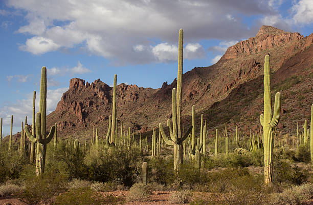
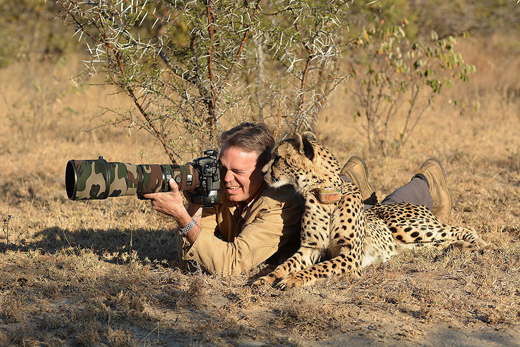
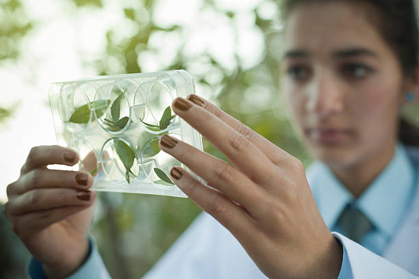
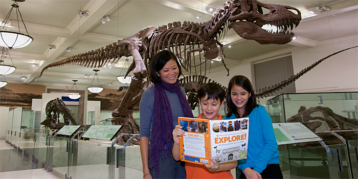

San Diego State University
Natural History Museum
Biodiversity Research Center of the Californias
Practical information, specimen collection, and scientific discussion were major goals of the founders of the San Diego State University Natural History Museum in 1874. Today, the Museum’s Biodiversity Research Center of the Californias (BRCC) serves as a leader for the preservation and interpretation of scientific specimens that document the biodiversity of southern California and Baja California. The extensive collections of the BRCC support Museum scientists’ research and publications . BRCC scientists also work with Museum Education and Exhibits staff to link scientific research with permanent exhibitions and educational programming. By promoting a collaborative, cross-border dialogue, BRCC scientists hope to preserve the biodiversity and natural resources in our region.

Binational Expeditions
The Museum conducts expeditions and other field research along the Baja California peninsula, which is a major portion of our area of emphasis. Museum scientists often work with specialists in different disciplines from various institutions in the United States and Mexico.

Atlas Projects
Plant and animal atlases provide information on the distribution, abundance, and long-term change of species in a particular geographic area. The San Diego Natural History Museum (theNAT) has developed a collection of atlas projects to promote a deeper understanding of the biodiversity of southern California and Baja California.

Research Departments
Research departments and collections at the San Diego Natural History Museum (theNAT) include: Birds and Mammals, Botany, Entomology, Herpetology, Marine Invertebrates, Mineralogy, Paleontology, and the Research Library.

BRCC Mission
A strategic plan developed by the Biodiversity Research Center of the Californias (BRCC) and adopted by the Museum’s Board of Directors defines the BRCC's mission and region.
SDSU NHM
Address
San Diego State University
Natural History Museum
San Diego, CA
(619) 594-5200
nhmuseum@sdsu.edu